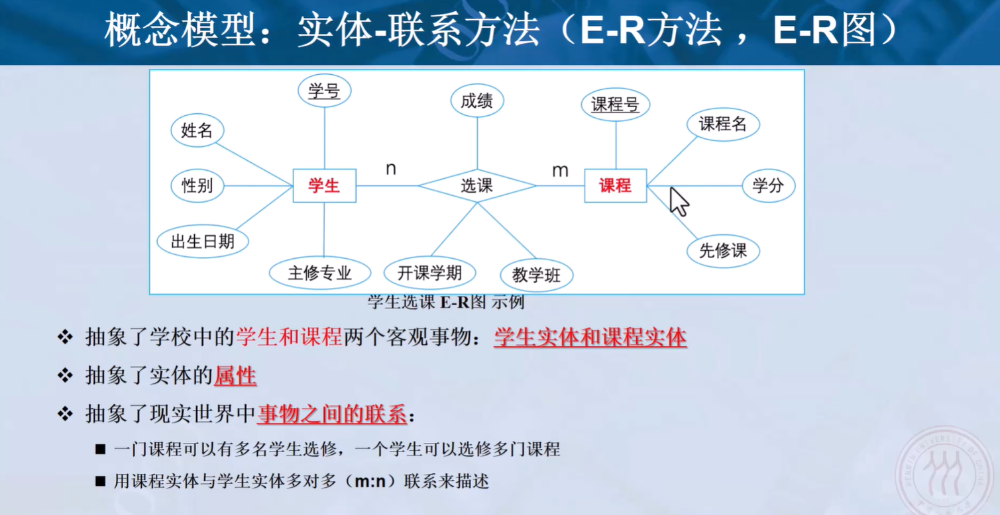
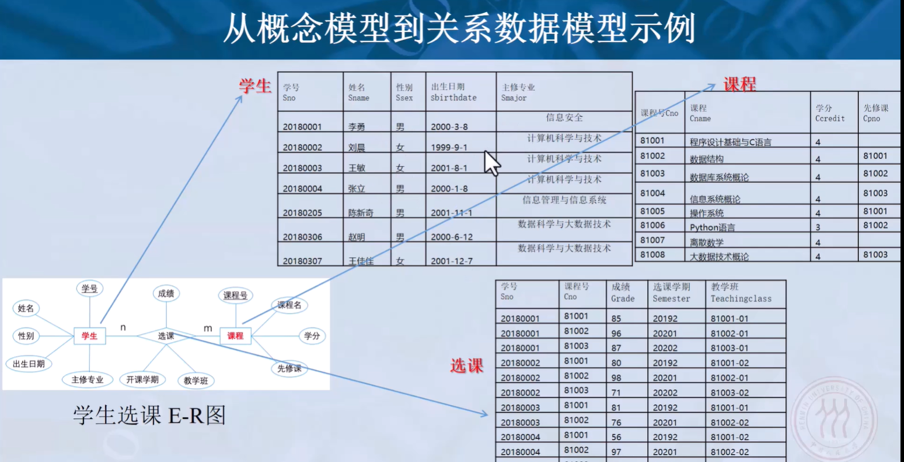
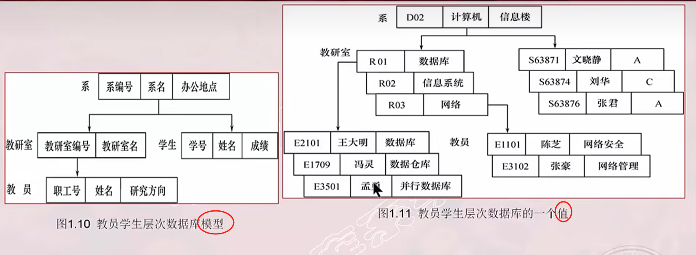
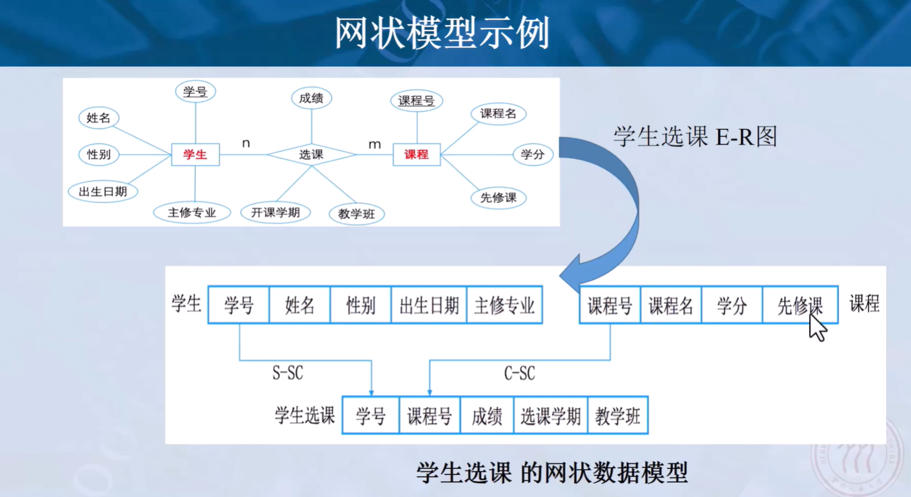
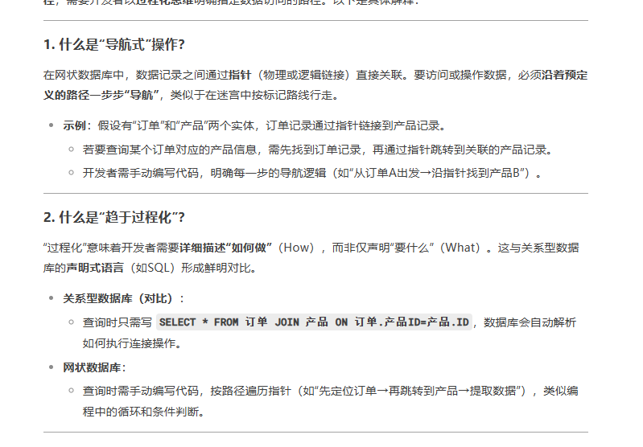
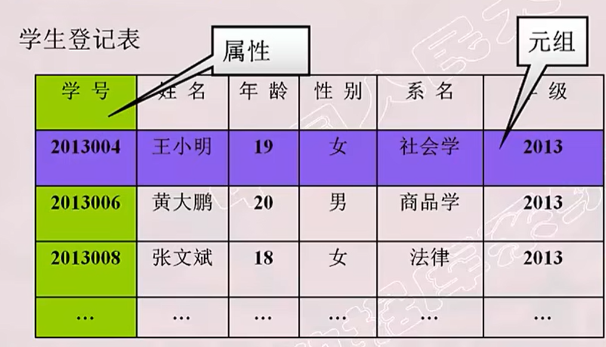
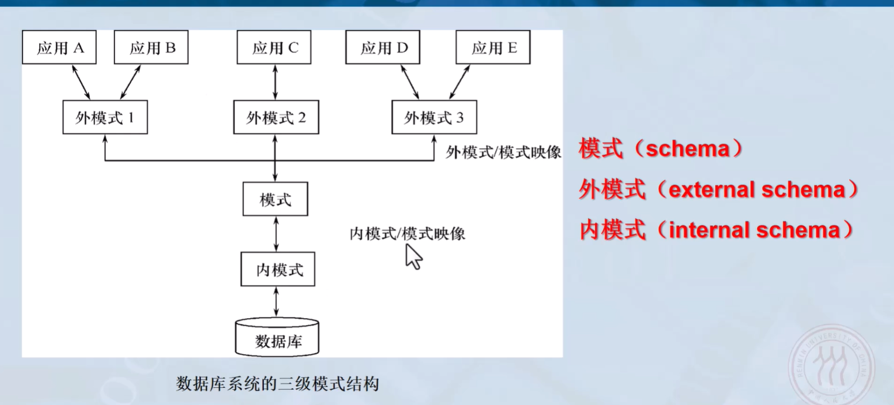
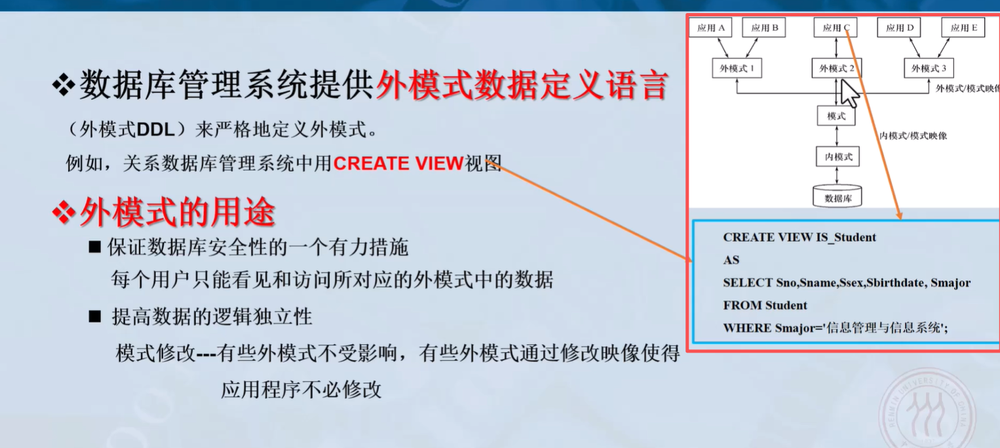
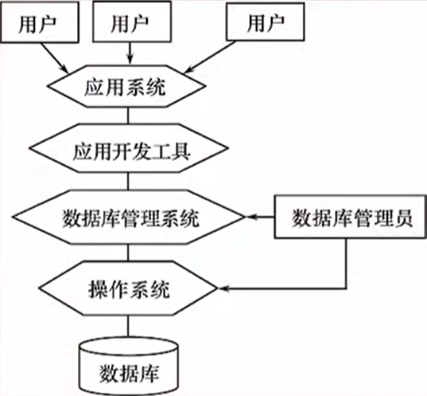
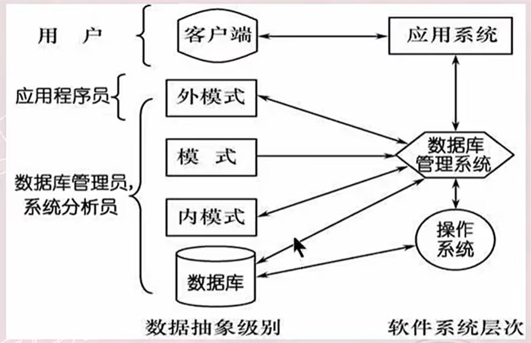

1 绪论
1.1 数据库系统概述
1.1.1 四个基本概念
数据库系统三代演变：层次网状数据库系统 -> 关系数据库系统（1970）（当前广泛应用、主要学习重点） -> 新一代数据库系统
数据库系统（DBS: DataBase System）：数据库（DataBase）、数据库管理系统（DataBaseManagementSystem）、数据库管理员（DataBaseAdministrator）组成的储存、管理、处理和维护数据的系统。（人大定义：在计算机系统中引入数据库之后的系统构成，数据库系统由数据库、数据库管理系统及其应用开发工具、应用程序、数据库管理员构成。）
- 数据：描述事物的符号记录，包括数据的表现形式和数据解释两个部分。如数字、音频、图形、文本、图像、语言、视频等多种表现形式。经过数字化处理后存入计算机。 <u>**数据**是信息的**符号表示或载体**。**信息**是数据的**内涵**，是**对数据的语义解释**。</u>
- 数据的语义：数据的含义。数据与其语义不可分。
- 数据的形式不能完全表达其内容。
- 记录：是计算机存储数据的一种形式或一种方法
- 数据库（DB）：长期存储在计算机内、有组织、可共享的大量数据的集合。数据库中的数据按照一定的数据模型组织、描述和存储，具有较小的冗余度、较高的数据独立性和易扩展性，并可为各种用户共享。
- 数据库管理系统（DBMS）：位于用户和操作系统间的数据管理系统的一层数据管理软件。用途：科学地组织和存储数据，高效地获取和维护数据。包括数据定义功能，数据组织、存储和管理，数据库的事物管理和运行管理，数据库的建立和维护功能，其他功能。<u>RDBMS</u>（Relational Database Management System，关系数据库管理系统） 是一种基于关系模型的数据库管理系统。
- 数据定义功能
- 提供数据定义语言 DDL(Data Definition Language)
- 定义数据库中的数据对象
- 数据组织、存储和管理
- 分类组织、存储和管理各种数据
- 确定数据在存储级别上的结构和存取方式
- 实现数据之间的联系
- 提供<u>多种存取方法</u>提高存取效率
- 数据操纵功能
- 提供数据操纵语言 DML：例如，SQL。
- 实现对数据库的基本操作（查询、插入、删除、修改）
- 数据库的事务管理和运行管理
- 数据的安全性、完整性、多用户对数据的并发使用
- 发生故障后的系统恢复数据库（保证正确性、一致性）
- 数据库在建立、运行和维护时由数据库管理系统DBMS统一管理和控制
- 数据库的建立和维护功能
- 提供实用程序、工具，完成数据库数据批量装载，数据库转储，介质故障恢复，数据库的重组织与性能监视等
- 其他功能
- 数据库管理系统与网络中其他软件系统的通信
- 数据库管理系统之间的数据转换
- 异构数据库之间的互访和互操作
- 数据定义功能
- 数据库系统（DBS）：在计算机系统中引入数据库后的系统，一般<u>**由数据库、数据库管理系统（及其开发工具）、应用系统（应用程序？）、数据库管理员构成**</u>。目的：存储信息并支持用户检索和更新所需的信息。
1.1.2 数据管理技术的产生和发展
数据管理：
- 对数据进行分类、组织、编码、存储、检索和维护
- 数据处理和数据分析的中心问题
数据管理技术的发展过程
- 人工管理（~1950）
- 文件系统（1950~1960）
- 数据库系统（1960~）
1.1.3 数据库系统的特点
- 数据结构化
- 不针对某一应用，面向整个企业或组织
- 不仅数据内部结构化，整体式结构化的，数据之间具有联系
- 数据记录可以变长
- 数据的最小存取单位是数据项
- 数据共享都高，冗余度低且易扩充
- 减少冗余度，节约存储空间
- 避免数据之间的不相容性与不一致性
- 使系统易于扩充
- 数据独立性高
- 物理独立性：应用程序与数据库中的数据的物理存储是相互独立的。其中之一的物理存储改变，不影响另一个
- 逻辑独立性：应用程序与数据库中的数据的逻辑结构是相互独立的。其中之一的逻辑结构改变，不影响另一个
- 数据独立性由数据库管理系统的二级映像功能来保证
- 数据由数据库管理系统统一管理和控制
- 数据的安全性保护（Security）：防止不合法使用造成的数据泄密、破坏
- 数据的完整性检查（Integrity）：保证数据的正确性、有效性、相容性
- 并发控制（Concurrency Control）
- 数据库恢复（Recovery）：从错误状态恢复到某一已知的正确状态
1.2 数据模型
<u>数据库系统的发展</u>实际上是<u>沿着数据模型为主线而推进</u>的。
数据模型是对现实世界数据特征的抽象，通俗的讲就是现实世界的模拟。
- 比较真实的模拟现实世界
- 容易为人所理解
- 便于在计算机实现
数据模型是数据库系统的核心和基础。
1.2.1 两类数据模型以及数据建模（Data Modeling）
根据不同的使用目的、使用对象可以把数据模型划分为两类（两个不同层次）。
- 概念模型（信息模型）：按用户的观点对数据和信息建模，用于数据库设计。
- 逻辑模型和物理模型：按计算机系统的观点对数据建模，用于DBMS的实现。
- 逻辑模型：网状模型、层次模型、关系模型、面向对象数据模型、对象关系数据模型、半结构化数据模型
- 物理模型是对数据最底层的抽象。描述数据再系统内（磁盘上）的表示方式和存取方法。
（现实世界的客观对象）到（DBMS支持的数据模型）：
- 认识抽象，（现实世界的客观对象）转化成（信息世界的概念模型）
- 数据库设计人员完成
- （信息世界的概念模型）转化成（DBMS支持的数据模型）
- （概念模型）到（逻辑模型）由数据库设计人员完成，数据库设计工具协助完成
- （逻辑模型）到（物理模型）由DBMS完成
总结：
数据建模（Data Modeling）：把现实世界中的具体事务抽象、组织为DBMS支持的某一数据模型
- 把现实世界中的客观对象<u>抽象为概念模型</u>（把现实世界抽象为信息世界，由数据库设计人员完成）
- 把概念模型转换为DBMS支持的某一数据模型（逻辑模型）（把信息世界转换为机器世界，由数据库设计人员完成）
- 最终成功存储到硬件介质上（逻辑模型到物理模型，由DBMS完成）
1.2.2 概念模型
概念模型的用途：信息世界的建模、现实世界到机器世界的一个中间层次、数据库设计的有力工具、数据库设计人员和用户之间进行交流的语言
概念模型的基本要求：较强的语义表达能力、简单清晰易于用户理解
基本概念：
- 实体（Entity）：客观存在并且相互区别的事务称为实体。可以是具体的人、事、物或抽象的概念。例，学生。
- 属性（Attribute）：实体所具有的某一特征成为属性。一个实体可以由若干个属性来刻画。
- 码（Key）：唯一标识实体的属性集成为码
- 实体型（Entity Type）：用实体名及其属性名集合来抽象和刻画同类实体称为实体型。
- 实体集（Entity Set）：同一类型实体的集合。
- 联系（Relationship）：现实世界中事物内部以及事物之间的联系再信息世界中反映为实体（型）内部的联系和实体（型）之间的联系。
- 实体内部的联系：组成实体的各属性之间的联系
- 实体之间的联系：不同实体集之间的联系。有一对一、一对多、多对多等多种类型
概念模型的一种表示方法：实体-联系方法（Entity-Relationship Approach，E-R方法）。用E-R图来描述现实世界的概念模型。E-R方法也称为E-R模型。


1.2.3 数据模型的组成要素（数据模型三要素）
数据模型是严格定义的一组概念的集合。精确描述系统的静态特性、动态特性和完整性约束条件（Integrity Constraints）。由三部分组成：
- 数据结构，<u>描述系统的静态特性</u>。
- 数据结构的类型来命名数据模型。层次结构–层次模型、网状结构–网状模型、关系结构–关系模型。
- 数据结构描述数据库的组成对象（对象的类型、内容、性质；对象之间的联系）。
- 数据操作，<u>描述系统的动态特性</u>。对数据库中各种对象的实例允许执行的操作的集合，包括操作及其规则。
- 数据操作的类型（查询Query，更新[插入insert、删除delete、修改update]）
- 数据操作的语言。定义数据操作的确切含义、符号、优先级别。（查询语言 Query Language、更新语言 DataManipulationLanguage）
- 完整性约束：一组完整性规则的集合。
- 完整性规则：给定的数据模型中数据及其联系所具有的制约和依存规则。
- 用以限定符合数据模型的数据库状态以及状态的变化，以保证数据的正确、有效和相容。
数据模型定义完整性约束条件时：
- 必须遵守对应模型通用的完整性约束条件
- 提供增加完整性约束条件的机制，来满足具体应用中所需要的语义约束条件。
1.2.4 常用的数据模型
- 【格式化模型】层次模型（Hierarchical Model）
- 【格式化模型】网状模型（Network Mode）
- 关系模型（Relational Model）（最常用）
- 【对象模型】面向对象数据模型（Object Oriented Data Model）
- 【对象模型】对象关系数据模型（Object Relational Data Model）
- 半结构化数据模型（Semi-structure Data Model）如 XML。
- 非结构化数据模型、图模型、键值对数据模型……
格式化模型中数据结构的基本单位：基本层次联系。格式化模型中都是基本层次联系的组合。基本层次联系是指记录和记录之间存在的联系。
1.2.5 层次模型
层次模型用树形结构来表示各类实体以及实体间的联系。
表示方法：
- 实体型：用记录（节点）类型来描述，一个节点表示一个记录类型
- 属性：字段
- 联系：节点之间的连线表示实体之间的一对多的父子关系
【定义】满足下面两个条件的（基本层次联系的集合）为层次模型：
- 有且只有一个节点没有双亲节点，这个节点称为根节点
- 根以外的其他节点有且只有一个双亲结点
层次模型的特点：
- 节点的双亲是唯一的
- 只能处理一对多的实体联系
- 任何记录值只有按其路径才能找到
- 没有一个子女记录值能够脱离双亲记录值而存在

层次模型的数据操纵：查询、插入、删除、更新
层次模型的完整性约束条件：无相应的双亲结点值就不能插入子女节点值、如果删除双亲结点值则其子女节点也被同时删除、更新操作应更新所有相应的记录（以保证数据的一致性）
层次模型的优点：
- 数据结构简单清晰
- 查询效率高，性能优于关系模型，不低于网状模型
- 提供了良好的完整性支持
层次模型的缺点：
- 多对多的联系表示不自然
- 对插入和删除操作的限制多，应用程序的编写较复杂
- 查询子女节点必须通过双亲结点
- 层次数据库的命令（操作语言）趋于程序化
1.2.6 网状模型
网状数据库系统采用网状结构来表示各类实体以及实体间的联系。
表示方法：
- 实体：记录（节点）
- 属性：字段
- 联系：节点之间的连线表示实体之间的一对多的父子联系
【定义】满足下面两个条件的（基本层次联系的集合）称为网状模型：
- 允许一个以上的节点无双亲
- 一个节点可以有多于一个的双亲
网状模型的特点：
- 允许多个节点没有双亲结点
- 允许一个节点有多个双亲结点
- 允许两个节点之间有多种联系
- 要为每个联系命名，并指出与该联系有关的双亲记录和子女记录
多对多联系在网状模型中的表示：间接表示多对多联系。
多对多联系在网状模型中的表示方法：将多对多联系分解成一对多联系。
例如，学生和课程是多对多联系。分解成一个学生选的课程，一个课程有哪些学生选了，两个一对多关系。

网状模型的数据操纵：网状模型的查询语言、增删改语言都是导航式的。也就是趋于过程化的

完整性约束条件不严格：
- 允许插入未确定双亲结点的子女节点
- 允许只删除双亲结点
实际的网状数据库提供了一定的完整性约束：
- 支持码的概念：唯一标识记录的数据项的集合，取唯一的值。
- 保证一个联系中，双亲与子女是一对多的联系。
- 可以定义双亲与子女之间的约束条件。例如属籍类别，双亲存在才能插入子女，双亲删除也要删除子女。
网状模型的优点：
- 能更直接地描述现实世。如，一个节点可以有多个双亲。
- 具有良好的性能，存取效率高。
网状模型的缺点：
- 结构比较复杂。随着应用环境的扩大，数据库结构变得越来越复杂，不利于用户掌握。
- 数据定义语言(Data Definition Language)DDL、数据操纵语言DML语言复杂，用户不容易使用。（结合上述的导航式、过程化理解）
- 记录之间的联系通过存取路径实现，应用程序必须选择存取路径，增加了程序员的负担。
1.2.7 关系模型
在用户观点下，关系模型中数据的逻辑结构是一张二维表。

关系模型有关的术语：
- 关系（Relation）：一个关系对应一张表
- 元组（Tuple）：表中一行
- 属性（Attribute）：表中一列
- 主码（Key）：码键。表中的某个属性组，可以唯一确定一个元组。
- 域（Domain）：一组具有相同数据类型的值的集合（即，属性的取值范围）。属性的取值范围来自某个域。
- 分量：元组中的一个属性
- 关系模式：对关系的描述。即例如关系模式 “学生（学号，姓名，年龄，性别，系名，年级）”。即用”关系名（属性1，属性2，……，属性n）“来表示。
关系必须是规范化的，满足一定的规范条件。最基本的规范条件：关系中的每一个分量必须是一个不可分的数据项，不允许表中有表。
关系模型的数据操纵：
- 数据操作是集合操作，操作的对象和结果都是关系集合。
- 存取路径对用户隐蔽。用户只需指出找什么，无需说明怎么找。（对比导航式、过程化）
- 提高了数据的独立性，提高了用户生产率。
关系的完整性约束条件
- 实体完整性：关系的主属性（即主码的组成部分）不能取空值（NULL）
- 参照完整性：关系的外码要么取空值，要么取被参照关系中某个元组的主码值
- 用户定义的完整性：确保数据满足用户定义的额外约束条件
- NOT NULL
- UNIQUE
- 值域约束
其中实体完整性、参照完整性是关系的两个不变性（不变性指在任何数据库状态下都必须始终满足的约束条件）。
关系模型的优点：
- 建立在严格的数学概念的基础上（Relation）。
- 概念单一
- 实体、联系都用关系表来表示
- 对数据的检索结果也是关系表
- 关系模型的存取路径对用户透明（结合导航式、过程化，对比理解）
- 具有更高的数据独立性，更好的安全保密性
- 简化了程序员的工作和数据库开发建立的工作
关系模型的缺点：
- 存取路径对用户透明，查询效率不如格式化数据模型。
- 为了提高性能，必须对用户的查询请求进行优化，增加了开发数据库管理系统的难度。
1.3 数据库系统的结构
1.3.1 数据库系统模式的概念
“型”和“值”：
- 型(Type)：对某一类型数据的结构和属性的说明
- 学生（学号，姓名，性别，出生日期，专业）
- 值(Value)：型的一个具体取值
- （2018001， 张三，男，2001-8-1，计算机科学与技术）
模式（Schema）：
- 是对数据库所有数据的逻辑结构和特征的描述
- 是型的描述，不涉及具体值
- 模式是相对稳定的
实例（Instance）：
- 数据库某一时刻的状态，模式的一个具体值
- 同一模式可以有很多实例
- 实例随着数据库中的数据的更新而变动
例子：
”学生选课数据库“模式：学生、课程、学生选课， <u>3个关系模式</u>
- 学生表：Student(Sno, Sname, Ssex, Sage, Sdept)
- 课程表：Course(Cno, Cname, Cpno, Ccredit)
- 选课表：SC(Sno, Cno, Grade)（实际上是描述了学生和课程的关系）
2014年的学生数据库实例，2014年学校所有学生、课程、学生选课的记录。
从数据库应用开发人员的角度：数据库系统采用三级模式结构，是数据库系统内部的系统结构。
从数据库用户角度看：
- 单用户
- 主从式
- 分布式
- 客户-服务器
- 浏览器-应用服务器数据库服务器
1.3.2 数据库系统的三级模式结构
<u>**数据库系统的三级模式和两级映像**</u>。

- 外模式（External Schema）子模式（Subschema）用户模式：
- 数据库用户（应用程序员和最终用户）能看见和使用的局部数据的逻辑结构和特征的描述
- 数据库<u>用户的数据视图</u>，是<u>与某一应用有关的数据的逻辑表示</u>
- 模式与外模式的关系
- 外模式通常是模式的子集、一个模式可以有多个外模式。反映了不同用户的应用需求、看待数据的方式、对数据保密的要求
- 对模式中某一数据，在不同的外模式重结构、类型、长度、保密级别都可以不同
- 外模式与应用的关系
- 一个外模式可以为多个应用系统所使用，一个应用程序只能使用一个外模式
- 外模式的用途
- 每个用户只能看见和访问对应外模式中的数据，简化用户视图
- 保证数据库安全性的一个有力措施
- <u>外模式DDL</u>定义外模式（关系数据库中的 CREATE VIEW 视图来定义外模式）

- 模式（Schema）逻辑模式：
- 数据库中<u>全体数据的逻辑结构和特征的描述</u>
- 所有用户的公共数据视图
- 一般某个应用的数据库有一个模式
- 模式是数据库系统模式结构的中心
- 与数据的物理存储细节和硬件环境无关
- 与具体的应用程序、开发工具及高级程序设计语言无关
- 定义模式
- 数据定义语言 DDL(Data Definition Language)来定义模式，以某种数据模型为基础，定义数据的逻辑结构。（数据模型： 是组织数据的抽象方式。最常见的模型就是关系模型，即表格；<u>DDL定义结构时，必须遵循所选数据模型的规则</u>，如果基于关系模型，DDL定义的就是表(Table)、列(Column)、行(Row) 以及它们之间的关系，如果基于文档模型（如MongoDB），那DDL定义的可能就是集合(Collection) 和其中文档(Document)的结构；数据记录由哪些数据项构成数据项的名字、类型、取值范围等）
- 数据之间的联系。
- 与数据有关的安全性、完整性要求
- 内模式（Internal Schema）存储模式（storage schema）
- 数据<u>物理结构和存储方式的描述</u>
- 数据在数据库内部的表示方式
- 记录的存储方式。顺序存储、堆存储、hash存储
- 索引的组织方式。B+树、Bitmap、Hash
- 数据是否压缩存储
- 数据是否加密
- 数据存储记录结构的规定。定长变长、记录是否可以跨页存放等
- 一个数据库只有一个内模式
1.3.3 数据库的二级映像（Mapping）（映射）与数据的独立性
- 外模式模式映像
- 每一个外模式，有一个外模式模式映像。
- 映像的定义通常包含在各外模式的描述中。
- 保证数据的<u>**逻辑独立性**</u>。当模式改变时，数据库管理员修改外模式模式映像，使得外模式保持不变。应用程序是依据外模式编写的，因此应用程序不需要修改，保证了数据与程序的逻辑独立性，简称数据的逻辑独立性。
- 模式内模式映像
- 定义了<u>数据全局逻辑结构与存储结构之间的对应关系</u>。例如，某个逻辑记录对应何种存储结构。
- 数据中模式内模式映像是唯一的。该映像的定义通常包含在模式的描述中。
- 保证数据的物理独立性。当存储结构改变，数据库管理员修改模式内模式映像，使得模式不变。保证了数据与程序的<u>物理独立性</u>，简称数据的物理独立性。
二级映像保证了应用程序的稳定性，除非应用本身变化，否则一般不需要修改。
从之前的以程序为中心发展为以数据为中心。数据和应用程序之间有了独立性，使得数据的定义和描述可以从应用程序分离出去。
数据的存取由数据库管理系统管理。简化了应用程序编写、维护、修改。
1.4 数据库系统的组成

- 数据库
- 数据库管理系统及其开发工具
- 应用程序系统
- 数据库管理员
- 用户
硬件平台及数据库
数据库系统对硬件资源的要求
- 足够大的内存
- 足够大的磁盘
- 较高的通道能力
软件
- 数据库管理系统
- 支持数据库管理系统运行的操作系统
- 与数据口接口的高级语言及其编译系统
- 以数据库管理系统为核心的应用开发工具
- 为特定应用环境开发的数据库应用系统
人员：不同的人员设计不同的数据抽象级别，具有不同的数据视图
- 数据库管理员DBA
- 系统分析员和数据库设计人员
- 应用程序员
- 最终用户
